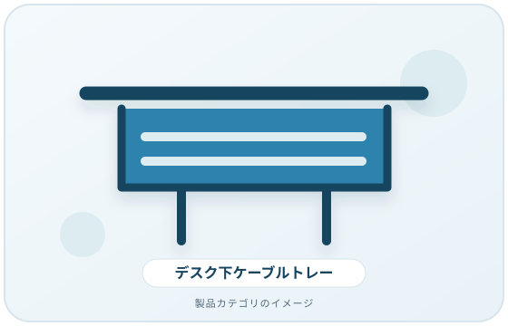
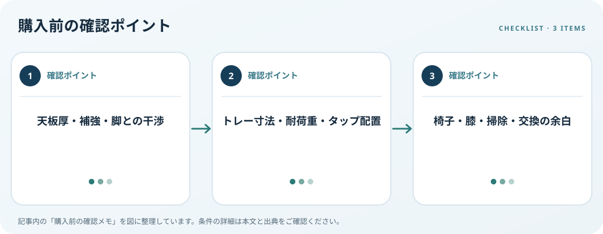

天板の構造、固定方法、収納量、放熱と足元スペースを照合します。この記事では仕様の確認順を整理します。
画像・ボタンはAmazonアソシエイトリンクです。適格購入により紹介料を得る場合があります。

Amazon.co.jpで「デスク下 ケーブルトレー」を探す ↗

天板裏の構造を調べる
天板厚、裏面の補強材、幕板、引き出しレール、脚の位置を確認します。クランプ式かねじ固定式かで必要な余白や工具が異なるため、製品の取付図と机裏を照合します。穴あけできない家具の場合は、固定方法の制約を先に決めてください。
収納量と荷重を見積もる
電源タップ、アダプター、ケーブルの余長を含め、トレー寸法と耐荷重を確認します。電源タップを収納する場合、スイッチやプラグに届くか、メーカーの設置条件に合うかも読みます。線を詰め込みすぎず、識別と交換に必要な余裕を残しましょう。
足元と保守の余白を作る
座った時の膝、足、椅子の動き、掃除の通り道に干渉しないか測ります。ケーブルを分ける場合は仕切りの有無を見て、曲げや端子への負担が出ないよう配線します。取り外しやすさ、角の仕上げ、固定部の緩みを確認できる構造かも比較します。
購入前の確認メモ
- 天板厚・補強・脚との干渉
- トレー寸法・耐荷重・タップ配置
- 椅子・膝・掃除・交換の余白
この記事は出典の公開情報を購入前の確認項目に整理したもので、特定商品の使用・実測・レビュー・ランキング・価格・在庫の調査は行っていません。購入時には利用機器メーカーの最新仕様をご確認ください。
出典
- Workstation Environment — OSHA（確認日: 2026-10-10）
- Workstation Evaluation — OSHA（確認日: 2026-10-10）